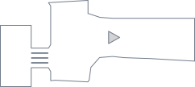
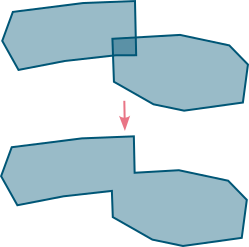

Docs
Geometry
Geometry#
When setting up a pedestrian dynamics simulation, one of the most fundamental parts, is to define where the agens can move. JuPedSim works with a walkable area, which means that every point inside this region can be reached by the agents and every point outside is not included in the simulation code. The borders of the walkable area may not be crossed by any agent.


A more complex simulation geometry, with multiple obstacles for an entrance scenario.#
Walkable area#
The walkable area in JuPedSim is defined as one simple, e.g., non self intersecting polygon covering a non-zero area.
This can be either directly defined via Shapely as a Polygon or as a GeometryCollection containing multiple Polygons.

A simple polygon, which can be used to model the walkable area of a simulation.#
Such polygons can be created like:
from shapely import GeometryCollection, Polygon
walkable_area = Polygon([(0, 0), (10, 0), (10, 10), (0, 10)])
When using the collection approach, JuPedSim will try to build the union of all polygon contained in the collection. This union must result in exactly one polygon, otherwise it is not possible to start a simulation.


Combining two overlapping polygons to one, which then can be used to model teh walkable area of a simulation.#
Such polygons can be created with:
from shapely import GeometryCollection, Polygon
first_polygon = Polygon([(0, 0), (10, 0), (10, 10), (0, 10)])
second_polygon = Polygon([(15, 0), (25, 0), (25, 10), (15, 10)])
walkable_area = GeometryCollection(first_polygon.union(second_polygon))
Obstacles#
In some scenarios their may be some obstacles, e.g., gates, barriers, inside the walkable area. Such obstacles will be avoided by the agents, they will not enter this region, but will move around them. These unreachable regions can be added as holes to a polygon.

By excluding areas from a polygon (as holes), these areas are marked as unreachable for the simulation.#
For creating walkable areas with holes you can use:
from shapely import Polygon
walkable_area = Polygon(
[
(0, 0), (20, 0), (20, 20), (0, 20)
],
# now come the holes/obstacles
[
# first hole/obstacle
[(1, 1), (1, 2), (2, 2), (2, 1)]
# second hole/obstacle
[(10, 1), (10, 2), (11, 2), (11, 1)]
],
)
Or you can “subtract” the hole from the walkable area, which will also work, when the touches the boundary of the geometry:
from shapely import Polygon, difference
walkable_area = Polygon([(0, 0), (20, 0), (20, 20), (0, 20)])
obstacle = Polygon([(1, 1), (1, 2), (2, 2), (2, 1)])
walkable_area = walkable.difference(obstacle)
Warning
Be careful when adding obstacles, that they do not split the walkable area in two parts.
Note
For more information how to create polygons with Shapely have a look at their documentation.
Adding a walkable area to the simulation#
After creating the walkable area, it now needs to be passed to the simulation. This can be done with:
import jupedsim as jps
# define walkable area
walkable_area = ...
simulation = jps.Simulation(
model=jps.CollisionFreeSpeedModel(),
geometry=area,
trajectory_writer=jps.SqliteTrajectoryWriter(
output_file=pathlib.Path("traj.sqlite")
)
)